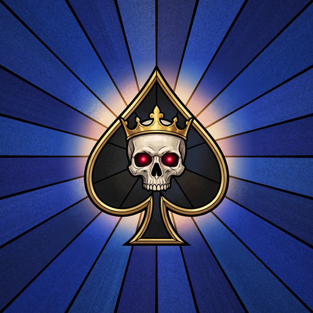

Grave Odds
Play poker hands to fight your way through a dark dungeon in stained glass. Climb the map room by room, see the damage before you strike and take the monster's blows in return. Loot gear in four tiers, collect charms that bend your Fury and shop in Tallowgate between the floors. Beat all three bosses to win. Lose and the run ends, but your records stay.
Version 0.4.6. Release notes · Backlog


What kind of game is this?
Things to do
- Beat the Ossuary King, the Tollkeeper and the Carrion Clock to win a run.
- See your damage before you play a hand.
- Equip gear, pick charms and buy rites in Tallowgate.
- Swap weak cards with free discards.
- Sort your hand by rank or by suit.
- Earn stars on each floor, finish three daily goals and level up for new table and card colors.
- Pick Candlelight, Dusk or Midnight at the start of each run.
- Earn ten achievements and beat your best score.
- Play upright or sideways, with touch, keys or an Xbox controller.
- Pick a card size in Settings: Compact, Auto or Large. Auto fills your screen.
- Five save slots. Close the game mid-fight and come back to the same hand.
Controls
Arrows or A and D move between cards. Space or W picks a card. E or Enter plays the hand. Q discards. 1 and 2 sort. Esc opens the Menu.
D-pad or left stick moves between cards. A picks. X plays the hand. Y discards. B clears your picks. LB and RB sort. View or Menu opens the Menu. In menus A chooses and B goes back.
Tap cards to pick them and tap again to put them back. Tap Play Hand or Discard. Menu at the top right. Works held upright or sideways.
Play with an Xbox controller
Any Xbox Wireless Controller with Bluetooth works. That is every Series X|S controller and the Xbox One controllers made since 2016. If the plastic around the Xbox button matches the face of the controller, it has Bluetooth. Other controllers that your phone or browser sees as a standard gamepad use the same buttons.
- Hold the Xbox button to turn the controller on.
- Hold the small Pair button on top for 3 seconds, until the Xbox button flashes fast.
- On your phone, open Settings, then Connected devices, then Pair new device.
- Tap Xbox Wireless Controller. The Xbox button stays lit when it is connected.
- Open Grave Odds. The touch buttons hide as soon as you use the controller.
- Connect the controller to your computer with a USB cable or Bluetooth.
- Open Play in your browser. Chrome, Edge, Firefox and Safari all work.
- Press any button once after the game loads, so the browser sees the controller.
The D-pad or left stick moves between buttons. A chooses and B goes back. You can play the whole game with only the controller.
Install on Android
- Tap Download for Android on this page.
- Open the file. Allow installs from your browser if your phone asks.
- Tap Install, then Open.
Android may show a Play Protect notice for apps from outside the Play Store. Version 0.4.6 installs over the last version and keeps your saves.
Feedback wanted
- Whether the fights feel too easy or too hard on Dusk.
- Whether you can read your cards on your phone held upright.
- How picking cards and playing a hand feels.
- Anything that looks wrong, with a screenshot.